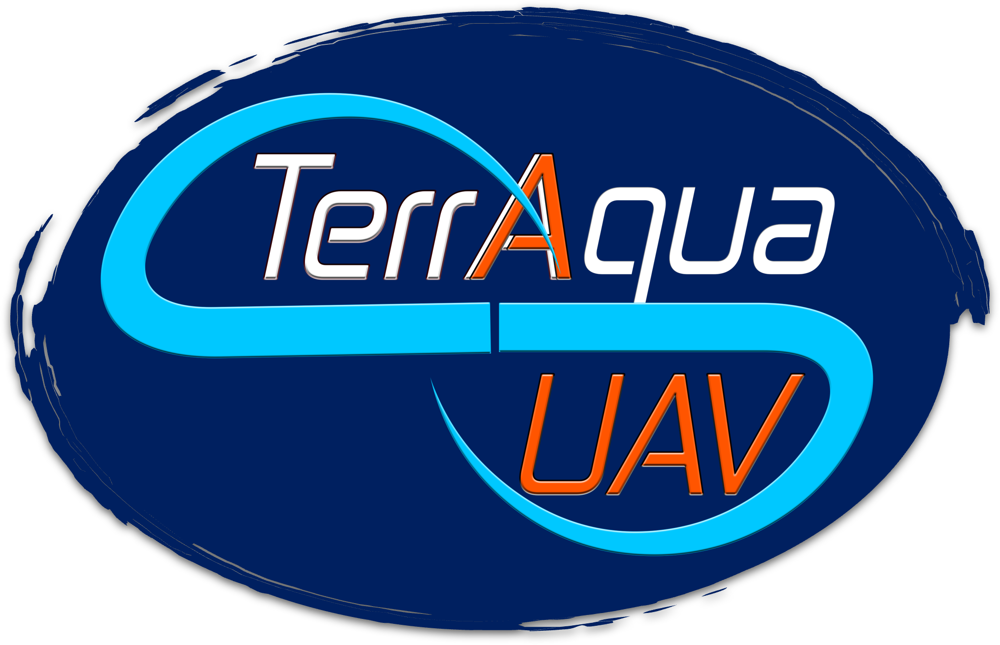
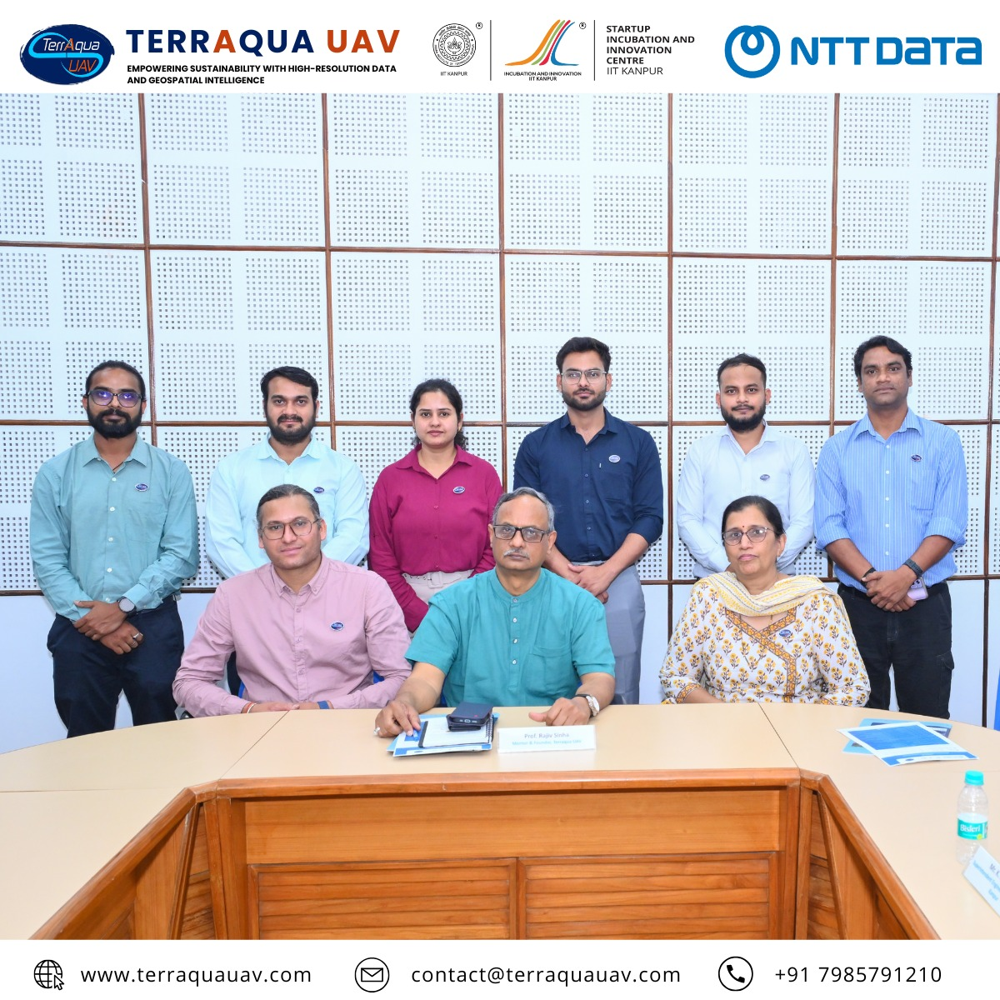

Department of Earth Sciences
Selected academic, scientific and professional outreach activities spanning training, workshops, conferences and specialised programmes.

Founder
TerrAqua UAV, founded in 2018, is a Geospatial Intelligence company specializing in high-resolution drone and satellite data.We design and develop advanced geospatial products and apply advanced Earth observation technologies and Remote Sensing analytics to deliver Sustainable actionable insights across sectors such as: Natural resource management, Agriculture, Environment conservation, Disaster risk reduction, and Urban Resilience.
